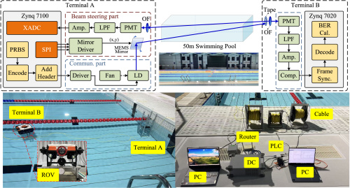
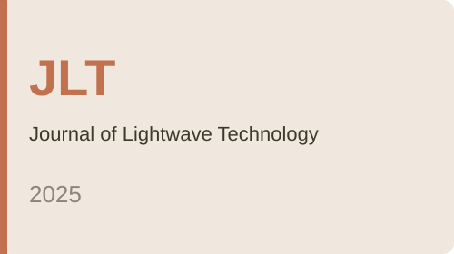
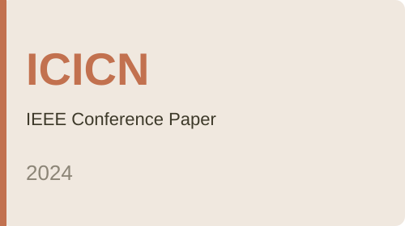

About Me
I am Shuaiqi Chen from the University of Science and Technology of China (USTC). My research focuses on optical wireless communication and MEMS-based beam acquisition and tracking, with an interest in building experimental systems that maintain optical links under motion.
My research interests also include modulating retro-reflector (MRR) communication. Alongside optical systems, I am exploring large-language-model inference and AI infrastructure engineering.
Education
University of Science and Technology of China
Integrated Master's–Ph.D. Program in Information and Communication Engineering
September 2022 – Present
Nanjing University of Aeronautics and Astronautics
Bachelor's Degree in Automation
September 2018 – June 2022
Experience
Optical Wireless Communication and Networking Center
University of Science and Technology of China
Graduate Research · Integrated Master's–Ph.D. Program
Advisors: Zhengyuan Xu and Weijie Liu
September 2022 – Present
Projects
MEMS Beam Acquisition and Tracking: A two-axis MEMS mirror, PMT feedback and FPGA control combine rotating raster acquisition with nutation scanning and Kalman-based tracking. Our Optics Express (2026) paper reports a minimum mean acquisition time of 2.01 s, and approximate bench tracking errors of ±10 mm at 0.25 m/s and ±15 mm at 0.50 m/s on a one-dimensional motorized stage. A cooperating passive retro-reflective target is required.
Real-Time Underwater Optical Communication: The same collaborative system integrates Zynq-based optical terminals, frame synchronization, data recovery and real-time BER measurement. Separate reported PRBS operating points in relatively clear swimming-pool water are 10 Mbps over 50 m, 50 Mbps over approximately 25 m, and 100 Mbps over 20 m, using a fixed transmitter and an ROV-mounted receiver.
GPIO / SPI Acquisition Prototypes: C and Python hardware-interface code exploration. No measured sampling-rate or reliability result is claimed.
Publications

Optics Express, 34(22), 40895–40910, 2026.
Journal of Lightwave Technology, 43(6), 2681–2689, 2025.
2024 IEEE 12th International Conference on Information, Communication and Networks (ICICN), pp. 541–546, 2024.